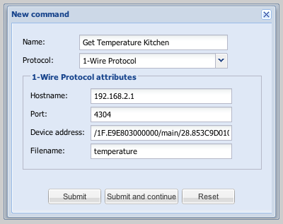
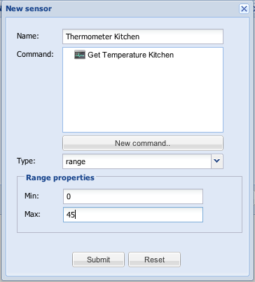

Hi guys,
I am currently looking into supporting 1-wire sensors to measure temperature and humidity in my rooms.
You can get a 1-wire USB connector for around $13 and a temperature sensors is a dollar 
I use the owfs project for linux to access the 1-wire bus using the "owserver" program.
That provides a socket which can be accessed by the java library "jowfsclient".
It took me 5 minutes and 5 lines of code to have my room temperature read by the controller.
It would be really nice if we could display the result on the iPhone.
--Marcus
{kind=link}
{kind=link}
|
To support this really nicely, I would like to see the following functionality:
|
|
Good list. I will get the 2.0 online and we can start looking into this. |
|
Hi Marcus, Have you ever committed the 1-wire code somewhere ? Thanks, |
|
No yet. Just started to look into it actually because of the new house. I have about 20 temp sensors and 5 humidity sensors installed and would like to see this stuff in openremote. Hopefully I find some time in the coming weeks. |
|
I've got my 1wire up and running again yesterday ( after a diskfailure ) so I can help you in testing things out. I have a 2.0.0-devel11 controller running on the same hardware. |
|
Great. I finished the 1-wire network over the X-mas days and have all sensors up and running now. |
|
Juha, |
|
Hi, is there anything new regarding 1-wire support in OpenRemote? I'd like to help either with implementation if necessary/possible. I have 1-wire network that includes switch, temperature, humidity sensors and barometer at the moment. Is there anything I can help beta test, or should I try to implement 1-wire support from scratch? |
|
Nothing new yet. I am currently trying to add RRD support using JRobin and would like to send 1-wire reading onto the KNX bus. |
|
Could we please have a sneak peek? Eager to get going... |
|
Can you please describe your plans, how do you want to implement this? I did some proof of concept "the simple way": I created trivial web application that is accessible via specific URL and provide response from 1-wire. Then I used http protocol for sensor to access values that I need. for example, http://myhost:8080/WireNet/sensor/OW2_Kitchen/temperature http://myhost:8080/WireNet/sensor/OW2_Kitchen/humidity http://myhost:8080/WireNet/sensor/OW1_Office/temperature provides access to owserver value of "temperature" of 1-wire device "/1F.E9E803000000/main/28.25E9E3010000" that has alias "OW2_Kitchen". I needed to assign aliases to devices, because my 1-wire network uses switch + plenty of devices and this keeps it nice and tidy I preferred this translation layer, since it reuses existing sensor already present in OpenRemote, it is very easy to implement and provides ability to easily do some advanced things like virtual devices (for example, virtual device may be "AvgHouseTemperature" that will return weighted average temperature of specific group of thermometers, etc) in the future. |
|
Hi all, I also have 1-wire controller implemented. I was just surprised, that value is read in a loop with very short delay. Is this behaviour normal, or is it my mistake? |
|
Jaroslav, did you only implement the StatusCommand interface or already did some kind of interface to display all attached sensors? I would like to provide a page within the controller to display the sensors and create a file which can be uploaded to the modeller to configure the devices. The read loop indeed is polling really often in the moment. We have to create some kind of interface so that a StatusCommand can tell that it only wants to be read every so and so second. Maybe you can share your code already? --Marcus |
|
I just implemented StatusCommand interface + added protocol xml to Designer, so you can configure your sensors in UI:  |align=left! Then you can use these values in Modeler, which is what I was looking for Regarding code, sure I can. I wonder what would be the best way to do it? There are some new files in both Controller and Modeler (UIDesigner). I, just like you, used jowfsclient, which uses BSD license. |
|
Sorry haven't been paying attention to this thread before. Jaroslav, please send me an email at juha at openremote org, and let's get your additions into the project release branch. Thanks, – Juha |
|
Oh and btw, EXCELLENT work!!! |
|
This looks great. Please contact Juha. The hostname and port to contact owserver should probably only once be configured in the controller properties and not on a per sensor basis. What is the "Filename" used for? I am currently adding JRobin to store the collected sensor data in a round robin database. |
|
This would be nice for most common use case, but in general, somebody may need to access more owservers for some reason. If you click "Submit and continue", values are preserved, so it is really quick to enter more sensors in a row even without this global configuration. I wasn't sure how to call the field that is now called Filename. It is the name of file in 1-wire device directory that holds value we want to use. For thermometer reading, it is "temperature" (but also "temperature9" ... "temperature12", depending on the device family), for humidity sensor it is "humidity"... this way I can use any readable value from 1-wire network as a source of openremote sensor data. I do not really check value of this field, which gives me some flexibility at the moment, but it may theoretically be a security issue. I will find possible useful names and do some extra validation on this field. If anyone has a good idea how to call the field, let me know |
|
More then one server might be a rare situation, but you have a point. I called the field "SensorAttribute" |
|
Hi All I am new to 1-wire but it looks to be a very cost effective way to capture data. Would it be possable to give an overview and parts list so we could better understand how to build and impliment souch a 1-wire system. |
|
It is really cheap. All you need is a USB busmaster, some twisted-pair cable and a few sensors. Here you find some general infos Wiki 1-Wire |
|
Hi all, if somebody is interested, 1-wire support is in trunk now and also available in online designer. I tested both and it works for me. If you have any questions, suggestions or improvements, let me know (or let's do it In online designer, you can assign any "type" to sensor, because this field is not taken into account at the moment. In general, both temperature and humidity should probably be range, so if you set it now, you won't need to change it later on if/when it will be implemented. |
|
There's a binary snapshot of the current controller available for download with 1-wire support included : http://sourceforge.net/projects/openremote/files/For%20Developers/OpenRemote-2.0.0-SNAPSHOT-20110307.zip/download |
|
I added documentation for 1-Wire protocol here: http://www.openremote.org/display/docs/OpenRemote+2.0+How+To+-+1-Wire+Sensors Can somebody please review it and let me know if there are any issues? Thanks jaro |
|
I like it |
|
Excellent work Jaro! I am very happy with the professional look. |